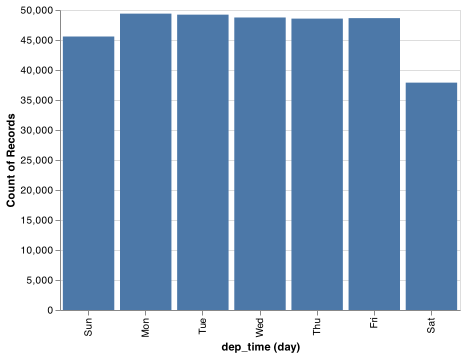
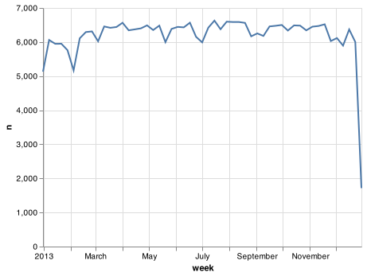

16 Dates and times
16.1 Introduction
This chapter will show you how to work with dates and times in pandas. At first glance, dates and times seem simple. You use them all the time in your regular life, and they don’t seem to cause much confusion. However, the more you learn about dates and times, the more complicated they seem to get. To warm up, try these three seemingly simple questions:
- Does every year have 365 days?
- Does every day have 24 hours?
- Does every minute have 60 seconds?
I’m sure you know that not every year has 365 days, but do you know the full rule for determining if a year is a leap year? (It has three parts.) You might have remembered that many parts of the world use daylight savings time (DST), so that some days have 23 hours, and others have 25. You might not have known that some minutes have 61 seconds because every now and then leap seconds are added because the Earth’s rotation is gradually slowing down.
Dates and times are hard because they have to reconcile two physical phenomena (the rotation of the Earth and its orbit around the sun) with a whole raft of geopolitical phenomena including months, time zones, and DST. This chapter won’t teach you every last detail about dates and times, but it will give you a solid grounding of practical skills that will help you with common data analysis challenges.
16.1.1 Prerequisites
This chapter will focus on the pandas time series functionality and the Timestamp methods in pandas, which makes it easier to work with dates and times in Python. We will also need nycflights13 for practice data.
import pandas as pd
import altair as alt
import numpy as np
import datetime
alt.data_transformers.enable('json')
#> DataTransformerRegistry.enable('json')
flights = pd.read_csv("https://github.com/byuidatascience/data4python4ds/raw/master/data-raw/flights/flights.csv")16.2 Creating date/times
pandas has two primary types of date/time data that refers to an instant in time:
- A datetime is a date plus a time: it uniquely identifies an
instant in time (typically to the nearest second). pandas reports these types
as
datetime64. The NumPy team established this native time series data type. Being encoded as 64-bit integers allows arrays of dates to be represented very compactly ref. - A Timestamp is a subclass of a datetime.datetime object. This pandas class provides the speed and ease of use in handling complex time handling.
In this chapter we are only going to focus on dates and date-times. We will focus on the pandas tools for dates and times and use the datetime python module for some elements of handling time in Python.
To get the current date or date-time you can use date.today() or datetime.now():
# using datetime
datetime.datetime.today()
#> datetime.datetime(2021, 3, 29, 17, 44, 4, 829614)
datetime.datetime.now()
#> datetime.datetime(2021, 3, 29, 17, 44, 4, 834672)
datetime.datetime.utcnow()
# using pandas
#> datetime.datetime(2021, 3, 29, 23, 44, 4, 839823)
pd.to_datetime('today')
#> Timestamp('2021-03-29 17:44:04.845160')
pd.to_datetime('now')
#> Timestamp('2021-03-29 23:44:04.850661')Otherwise, there are three ways you’re likely to create a date/time:
- From a string.
- From individual date-time components.
- From an existing date/time object.
They work as follows.
16.2.1 From strings
Date/time data often comes as strings. You’ve seen one approach to parsing strings into date-times in date-times. Another approach is to use the helpers provided by pandas. They can work out the format of unambiguous dates. For example:
pd.to_datetime("2017-01-31")
#> Timestamp('2017-01-31 00:00:00')
pd.to_datetime("January 31st, 2017")
#> Timestamp('2017-01-31 00:00:00')
pd.to_datetime("31-Jan-2017")
# using timestamp
#> Timestamp('2017-01-31 00:00:00')
pd.Timestamp("2017-01-31")
#> Timestamp('2017-01-31 00:00:00')
pd.Timestamp("January 31st, 2017")
#> Timestamp('2017-01-31 00:00:00')
pd.Timestamp("31-Jan-2017")
#> Timestamp('2017-01-31 00:00:00')You can specify component order for ambiguous dates with pd.to_datetime(). For example:
pd.to_datetime('10-11-09')
#> Timestamp('2009-10-11 00:00:00')
pd.to_datetime('10-11-09', yearfirst=True)
#> Timestamp('2010-11-09 00:00:00')
pd.to_datetime('10-11-09', dayfirst=True)
#> Timestamp('2009-11-10 00:00:00')
pd.to_datetime('10-11-09', format = '%d-%y-%m')
#> Timestamp('2011-09-10 00:00:00')If you use numbers in pd.to_datetime() it is interpreted as the number of nanoseconds from 1970-01-01. However, the unit can be changed.
pd.to_datetime(100000000)
#> Timestamp('1970-01-01 00:00:00.100000')
pd.to_datetime(100000000, unit = 'ns')
#> Timestamp('1970-01-01 00:00:00.100000')
pd.to_datetime(1, unit = 's')
#> Timestamp('1970-01-01 00:00:01')To input time into a datetime add the hh:mm:ss format into the string of the parsing function:
pd.to_datetime("2017-01-31 20:11:59")
#> Timestamp('2017-01-31 20:11:59')
pd.to_datetime("01/31/2017 08:01")
#> Timestamp('2017-01-31 08:01:00')
pd.Timestamp("2017-01-31 20:11:59")
#> Timestamp('2017-01-31 20:11:59')
pd.Timestamp("01/31/2017 08:01")
#> Timestamp('2017-01-31 08:01:00')16.2.2 From individual components
Instead of a single string, sometimes you’ll have the individual components of the date-time spread across multiple columns. This is what we have in the flights data:
flights.filter(['year', 'month', 'day', 'hour', 'minute']).head()| year | month | day | hour | minute | |
|---|---|---|---|---|---|
| 0 | 2013 | 1 | 1 | 5 | 15 |
| 1 | 2013 | 1 | 1 | 5 | 29 |
| 2 | 2013 | 1 | 1 | 5 | 40 |
| 3 | 2013 | 1 | 1 | 5 | 45 |
| 4 | 2013 | 1 | 1 | 6 | 0 |
To create a date/time from this sort of input, use Timestamp():
(flights.
filter(['year', 'month', 'day', 'hour', 'minute']).
assign(departure = pd.to_datetime(flights[['year', 'month', 'day', 'hour', 'minute']]))
)| year | month | day | hour | minute | departure | |
|---|---|---|---|---|---|---|
| 0 | 2013 | 1 | 1 | 5 | 15 | 2013-01-01 05:15:00 |
| 1 | 2013 | 1 | 1 | 5 | 29 | 2013-01-01 05:29:00 |
| 2 | 2013 | 1 | 1 | 5 | 40 | 2013-01-01 05:40:00 |
| 3 | 2013 | 1 | 1 | 5 | 45 | 2013-01-01 05:45:00 |
| 4 | 2013 | 1 | 1 | 6 | 0 | 2013-01-01 06:00:00 |
| ... | ... | ... | ... | ... | ... | ... |
| 336771 | 2013 | 9 | 30 | 14 | 55 | 2013-09-30 14:55:00 |
| 336772 | 2013 | 9 | 30 | 22 | 0 | 2013-09-30 22:00:00 |
| 336773 | 2013 | 9 | 30 | 12 | 10 | 2013-09-30 12:10:00 |
| 336774 | 2013 | 9 | 30 | 11 | 59 | 2013-09-30 11:59:00 |
| 336775 | 2013 | 9 | 30 | 8 | 40 | 2013-09-30 08:40:00 |
336776 rows × 6 columns
Let’s do the same thing for each of the four time columns in flights. The times are represented in a slightly odd format, so we use modulus arithmetic to pull out the hour and minute components. Once I’ve created the date-time variables, I focus in on the variables we’ll explore in the rest of the chapter.
# parsing function
def make_datetime_100(data, time):
date_data = (data[['year', 'month', 'day', time]].
assign(
hour = lambda x: x[time] // 100,
minute = lambda x: x[time] % 100).
filter(['year', 'month', 'day', 'hour', 'minute'])
)
out = pd.to_datetime(date_data)
return out
# data table
flights_dt = (flights.
query('(dep_time.notna()) & (arr_time.notna())').
assign(
dep_time = lambda x: make_datetime_100(x, 'dep_time'),
arr_time = lambda x: make_datetime_100(x, 'arr_time'),
sched_dep_time = lambda x: make_datetime_100(x, 'sched_dep_time'),
sched_arr_time = lambda x: make_datetime_100(x, 'sched_arr_time')
).
filter( regex = 'origin|dest|delay$|time$')
)
flights_dt| dep_time | sched_dep_time | dep_delay | arr_time | sched_arr_time | arr_delay | origin | dest | air_time | |
|---|---|---|---|---|---|---|---|---|---|
| 0 | 2013-01-01 05:17:00 | 2013-01-01 05:15:00 | 2.0 | 2013-01-01 08:30:00 | 2013-01-01 08:19:00 | 11.0 | EWR | IAH | 227.0 |
| 1 | 2013-01-01 05:33:00 | 2013-01-01 05:29:00 | 4.0 | 2013-01-01 08:50:00 | 2013-01-01 08:30:00 | 20.0 | LGA | IAH | 227.0 |
| 2 | 2013-01-01 05:42:00 | 2013-01-01 05:40:00 | 2.0 | 2013-01-01 09:23:00 | 2013-01-01 08:50:00 | 33.0 | JFK | MIA | 160.0 |
| 3 | 2013-01-01 05:44:00 | 2013-01-01 05:45:00 | -1.0 | 2013-01-01 10:04:00 | 2013-01-01 10:22:00 | -18.0 | JFK | BQN | 183.0 |
| 4 | 2013-01-01 05:54:00 | 2013-01-01 06:00:00 | -6.0 | 2013-01-01 08:12:00 | 2013-01-01 08:37:00 | -25.0 | LGA | ATL | 116.0 |
| ... | ... | ... | ... | ... | ... | ... | ... | ... | ... |
| 336765 | 2013-09-30 22:40:00 | 2013-09-30 22:45:00 | -5.0 | 2013-09-30 23:34:00 | 2013-09-30 23:51:00 | -17.0 | JFK | SYR | 41.0 |
| 336766 | 2013-09-30 22:40:00 | 2013-09-30 22:50:00 | -10.0 | 2013-09-30 23:47:00 | 2013-09-30 00:07:00 | -20.0 | JFK | BUF | 52.0 |
| 336767 | 2013-09-30 22:41:00 | 2013-09-30 22:46:00 | -5.0 | 2013-09-30 23:45:00 | 2013-09-30 00:01:00 | -16.0 | JFK | ROC | 47.0 |
| 336768 | 2013-09-30 23:07:00 | 2013-09-30 22:55:00 | 12.0 | 2013-09-30 23:59:00 | 2013-09-30 23:58:00 | 1.0 | JFK | BOS | 33.0 |
| 336769 | 2013-09-30 23:49:00 | 2013-09-30 23:59:00 | -10.0 | 2013-09-30 03:25:00 | 2013-09-30 03:50:00 | -25.0 | JFK | PSE | 196.0 |
328063 rows × 9 columns
With this data, I can visualise the distribution of departure times across the year:
dat_plot = (flights_dt.
filter(['dep_time']).
assign(dpd = flights_dt.dep_time.dt.floor("D")).
groupby(['dpd'], as_index = False).
count())
chart = (alt.Chart(dat_plot).
encode(x = 'dpd', y = 'dep_time').
mark_line())
chart.save("screenshots/altair_datetimes_1.png")
Or within a single day:
dat_plot = (flights_dt.filter(['dep_time']).query("dep_time < 20130102").
assign(dpd = flights_dt.dep_time.dt.floor("10min")).
groupby(['dpd'], as_index = False).
count())
chart = (alt.Chart(dat_plot).
encode(x = 'dpd', y = 'dep_time').
mark_line())
chart.save("screenshots/altair_datetimes_2.png")
16.2.3 From other types
Sometimes you’ll get date/times as numeric offsets from the “Unix Epoch”, 1970-01-01. If the offset is in seconds, use as_datetime(); if it’s in days, use as_date().
pd.to_datetime(60 * 60 * 10, unit = 's')
#> Timestamp('1970-01-01 10:00:00')
pd.to_datetime(365 * 10 + 2, unit = 'd')
#> Timestamp('1980-01-01 00:00:00')16.2.4 Exercises
What happens if you parse a string that contains invalid dates?
pd.to_datetime(['2010-10-10', 'bananas']) pd.to_datetime(['2010-10-10', 'bananas'], errors = 'coerce')
16.3 Date-time components
Now that you know how to get date-time data into Python’s datetime data structures, let’s explore what you can do with them. This section will focus on the Timestamp properites that let you get and set individual components. The next section will look at how arithmetic works with datetimes.
16.3.1 Getting components
You can pull out individual parts of the date with the accessor properties .year, .month, .day() (day of the month), .dayofyear (day of the year), .dayofweek (day of the week), .hour, .minute, and .second. When using these properties on a pandas series you must include .dt. as in <PANDAS SERIES>.dt.month.
datetime = pd.to_datetime("2016-07-08 12:34:56")
datetime.year
#> 2016
datetime.month
#> 7
datetime.day
#> 8
datetime.dayofyear
#> 190
datetime.dayofweek
#> 4To return the name of the month or day of the week use the two name methods .day_name() and month_name().
datetime.month_name()
datetime.day_name()We can use .day_name() in pandas to create a new variable for your chart or use day() in Altair to build the date variable only for the chart using the TimeUnit transforms to see that more flights depart during the week than on the weekend:
flights_dt.dep_time.dt.day_name()
#> 0 Tuesday
#> 1 Tuesday
#> 2 Tuesday
#> 3 Tuesday
#> 4 Tuesday
#> ...
#> 336765 Monday
#> 336766 Monday
#> 336767 Monday
#> 336768 Monday
#> 336769 Monday
#> Name: dep_time, Length: 328063, dtype: object
chart = (alt.Chart(flights_dt).
encode(alt.X('day(dep_time):O'), alt.Y('count()')).
mark_bar().
properties(width = 400))
chart.save("screenshots/altair_datetimes_3.png")
There’s an interesting pattern if we look at the average departure delay by minute within the hour. It looks like flights leaving in minutes 20-30 and 50-60 have much lower delays than the rest of the hour!
plot_dat = (flights_dt.assign(
minute = lambda x: x.dep_time.dt.minute).
groupby('minute').
agg(
avg_delay = ('arr_delay', np.mean),
n = ('arr_delay', 'size')
).reset_index()
)
chart = (alt.Chart(plot_dat).
encode(alt.X('minute'), alt.Y('avg_delay')).
mark_line())
chart.save("screenshots/altair_datetimes_4.png")
Interestingly, if we look at the scheduled departure time we don’t see such a strong pattern:
sched_dep = (flights_dt.assign(
minute = lambda x: x.sched_dep_time.dt.minute).
groupby('minute').
agg(
avg_delay = ('arr_delay', np.mean),
n = ('arr_delay', 'size')
).reset_index()
)
chart = (alt.Chart(sched_dep).
encode(alt.X('minute'), alt.Y('avg_delay')).
mark_line())
chart.save("screenshots/altair_datetimes_5.png")
So why do we see that pattern with the actual departure times? Well, like much data collected by humans, there’s a strong bias towards flights leaving at “nice” departure times. Always be alert for this sort of pattern whenever you work with data that involves human judgement!
chart = (alt.Chart(sched_dep).
encode(alt.X('minute'), alt.Y('n')).
mark_line())
chart.save("screenshots/altair_datetimes_6.png")
16.3.2 Rounding
An alternative approach to plotting individual components is to round the date to a nearby unit of time, with .dt.floor(), .dt.round(), and .dt.ceiling(). However, these methods don’t work well for coarser roundings. For example, finding the floor of week does not work using dt.floor() and the recommended approach is to use .dt.to_period() in tandem with .dt.to_timestep() as we do in the following example. Each method takes a Series of datetimes to adjust and then the name of the unit round down (floor), round up (ceiling), or round to. This, for example, allows us to plot the number of flights per week:
https://pandas.pydata.org/pandas-docs/stable/user_guide/timeseries.html#timeseries-offset-aliases
plot_dat = flights_dt.assign(
week = lambda x: x.dep_time.dt.to_period("W").dt.to_timestamp()
).groupby('week').agg(
n = ('dep_time', 'size')
).reset_index()
chart = (alt.Chart(plot_dat).
encode(alt.X('week'), alt.Y('n')).
mark_line())
chart.save("screenshots/altair_datetimes_7.png")
Computing the difference between a rounded and unrounded date can be particularly useful.
16.3.3 Setting components
You can also use each accessor function to set the components of a date/time:
datetime = pd.Timestamp("2016-07-08 12:34:56")
datetime.replace(year = 2020)
#> Timestamp('2020-07-08 12:34:56')
datetime.replace(month = 1)
#> Timestamp('2016-01-08 12:34:56')
datetime.replace(hour = datetime.hour + 1)
#> Timestamp('2016-07-08 13:34:56')Alternatively, Rather than modifying each separately, you can create a new date-time with replace() using all of the arguments. This allows you to set multiple values at once.
datetime.replace(year = 2020, month = 2, day = 2, hour = 2)
#> Timestamp('2020-02-02 02:34:56')If values are too big, you will see an error:
pd.Timestamp("2015-02-01").replace(day = 30)
#> Error in py_call_impl(callable, dots$args, dots$keywords): ValueError: day is out of range for month
#>
#> Detailed traceback:
#> File "<string>", line 1, in <module>
#> File "pandas/_libs/tslibs/timestamps.pyx", line 1454, in pandas._libs.tslibs.timestamps.Timestamp.replaceYou can use replace() to show the distribution of flights across the course of the day for every day of the year:
Note: The Timestamp.replace() method does not have an equivalent method that can be used on pandas Series so you will need to use an apply() method on the datetime series. We have avoided the use of apply() in this book up to this point. apply() is a powerful technique within pandas that is worth your time to master. You can read the pandas documentation to find additional help.
plot_dat = flights_dt.assign(
dep_hour = lambda x: x.dep_time.apply(lambda y: y.replace(month = 1, day = 1))
)
chart = (alt.Chart(plot_dat).
encode(alt.X('dep_hour'), alt.Y('count()')).
mark_line())
chart.save("screenshots/altair_datetimes_8.png")
Setting larger components of a date to a constant is a powerful technique that allows you to explore patterns in the smaller components.
16.3.4 Exercises
How does the distribution of flight times within a day change over the course of the year?
Compare
dep_time,sched_dep_timeanddep_delay. Are they consistent? Explain your findings.Compare
air_timewith the duration between the departure and arrival. Explain your findings. (Hint: consider the location of the airport.)How does the average delay time change over the course of a day? Should you use
dep_timeorsched_dep_time? Why?On what day of the week should you leave if you want to minimise the chance of a delay?
What makes the distribution of
diamonds.caratandflights.sched_dep_timesimilar?Confirm my hypothesis that the early departures of flights in minutes 20-30 and 50-60 are caused by scheduled flights that leave early. Hint: create a binary variable that tells you whether or not a flight was delayed.
16.4 Time spans (Deltas)
Next you’ll learn about how arithmetic with dates work, including subtraction, addition, and division. Along the way, you’ll learn about pandas tools for representing time spans. In Python, when you subtract two dates, you get a Timedelta object:
# How old is Hathaway?
h_age = pd.Timestamp.now() - pd.Timestamp("19770907")
h_age
#> Timedelta('15909 days 17:44:53.211199')A Timedelta object records a time span in nanoseconds using 64 bit integers which can make Timedeltas a little painful to work with, so Timedelta provides access to the number of days with .days and the number of seconds with .total_seconds().
h_age.days
h_age.days // 365 # to get years
h_age.total_seconds()Timedeltas come with a bunch of convenient constructors:
pd.Timedelta(seconds = 15)
#> Timedelta('0 days 00:00:15')
pd.Timedelta(minutes = 10)
#> Timedelta('0 days 00:10:00')
pd.Timedelta(hours = 12)
#> Timedelta('0 days 12:00:00')
pd.Timedelta(hours = 24)
#> Timedelta('1 days 00:00:00')
pd.Timedelta(days = 5)
#> Timedelta('5 days 00:00:00')
pd.Timedelta(weeks = 3)
# to create a series of Timedeltas you can use a for loop.
#> Timedelta('21 days 00:00:00')
pd.Series([pd.Timedelta(days=i) for i in range(5)])
#> 0 0 days
#> 1 1 days
#> 2 2 days
#> 3 3 days
#> 4 4 days
#> dtype: timedelta64[ns]2*pd.Timedelta(days = 365)
#> Timedelta('730 days 00:00:00')
pd.Timedelta(days = 365) + pd.Timedelta(weeks = 12) + pd.Timedelta(hours = 15)
#> Timedelta('449 days 15:00:00')You can add and subtract Timedeltas to and from days:
tomorrow = pd.Timestamp.today() + pd.Timedelta(days = 1)
last_year = pd.Timestamp.today() - pd.Timedelta(days = 365)And of course, add them to dates. Timedeltas are strict durations based on the arguments. Those durations do work across the various novelties of daylight savings time and leaps in the calendar like February 29th.
# A leap year
pd.Timestamp("2020-02-01") + pd.Timedelta(days = 30)
# Not a leap year
#> Timestamp('2020-03-02 00:00:00')
pd.Timestamp("2019-02-01") + pd.Timedelta(days = 30)
# Daylight Savings Time
#> Timestamp('2019-03-03 00:00:00')
one_pm = pd.Timestamp('2016-03-12 13:00:00', tz = 'America/New_York')
# Day two 1pm
one_pm_d2 = pd.Timestamp('2016-03-13 13:00:00', tz = 'America/New_York')
one_pm + pd.Timedelta(days = 1)
#> Timestamp('2016-03-13 14:00:00-0400', tz='America/New_York')
one_pm + pd.Timedelta(hours = 24)
# Notice that it correctly represents that only 23 hours had passed.
#> Timestamp('2016-03-13 14:00:00-0400', tz='America/New_York')
one_pm_d2 - one_pm
#> Timedelta('0 days 23:00:00')Let’s use Timedeltas to fix an oddity related to our flight dates. Some planes appear to have arrived at their destination before they departed from New York City.
flights_dt.query('arr_time < dep_time')| dep_time | sched_dep_time | dep_delay | arr_time | sched_arr_time | arr_delay | origin | dest | air_time | |
|---|---|---|---|---|---|---|---|---|---|
| 719 | 2013-01-01 19:29:00 | 2013-01-01 19:20:00 | 9.0 | 2013-01-01 00:03:00 | 2013-01-01 00:07:00 | -4.0 | EWR | BQN | 192.0 |
| 725 | 2013-01-01 19:39:00 | 2013-01-01 18:40:00 | 59.0 | 2013-01-01 00:29:00 | 2013-01-01 21:51:00 | NaN | JFK | DFW | NaN |
| 791 | 2013-01-01 20:58:00 | 2013-01-01 21:00:00 | -2.0 | 2013-01-01 00:08:00 | 2013-01-01 23:59:00 | 9.0 | EWR | TPA | 159.0 |
| 794 | 2013-01-01 21:02:00 | 2013-01-01 21:08:00 | -6.0 | 2013-01-01 01:46:00 | 2013-01-01 01:58:00 | -12.0 | EWR | SJU | 199.0 |
| 797 | 2013-01-01 21:08:00 | 2013-01-01 20:57:00 | 11.0 | 2013-01-01 00:25:00 | 2013-01-01 00:39:00 | -14.0 | EWR | SFO | 354.0 |
| ... | ... | ... | ... | ... | ... | ... | ... | ... | ... |
| 336753 | 2013-09-30 21:45:00 | 2013-09-30 21:45:00 | 0.0 | 2013-09-30 01:15:00 | 2013-09-30 01:40:00 | -25.0 | JFK | SJU | 192.0 |
| 336754 | 2013-09-30 21:47:00 | 2013-09-30 21:37:00 | 10.0 | 2013-09-30 00:30:00 | 2013-09-30 00:27:00 | 3.0 | LGA | FLL | 139.0 |
| 336762 | 2013-09-30 22:33:00 | 2013-09-30 21:13:00 | 80.0 | 2013-09-30 01:12:00 | 2013-09-30 00:30:00 | 42.0 | EWR | SFO | 318.0 |
| 336763 | 2013-09-30 22:35:00 | 2013-09-30 20:01:00 | 154.0 | 2013-09-30 00:59:00 | 2013-09-30 22:49:00 | 130.0 | JFK | MCO | 123.0 |
| 336769 | 2013-09-30 23:49:00 | 2013-09-30 23:59:00 | -10.0 | 2013-09-30 03:25:00 | 2013-09-30 03:50:00 | -25.0 | JFK | PSE | 196.0 |
10633 rows × 9 columns
These are overnight flights. We used the same date information for both the departure and the arrival times, but these flights arrived on the following day. We can fix this by adding days(1) to the arrival time of each overnight flight.
flights_dt = flights_dt.assign(
overnight_TF = lambda x: x.arr_time < x.dep_time,
overnight = lambda x: x.overnight_TF.astype('int').apply(lambda y: pd.Timedelta(days = y)),
arr_time = lambda x: x.arr_time + x.overnight,
sched_arr_time = lambda x: x.sched_arr_time + x.overnight
)Now all of our flights obey the laws of physics.
flights_dt.query('arr_time < dep_time')| dep_time | sched_dep_time | dep_delay | arr_time | sched_arr_time | arr_delay | origin | dest | air_time | overnight_TF | overnight |
|---|
16.5 Time zones
Time zones are an enormously complicated topic because of their interaction with geopolitical entities. Fortunately we don’t need to dig into all the details as they’re not all important for data analysis, but there are a few challenges we’ll need to tackle head on.
The first challenge is that everyday names of time zones tend to be ambiguous. For example, if you’re American you’re probably familiar with EST, or Eastern Standard Time. However, both Australia and Canada also have EST! To avoid confusion, The Python package pytz uses the international standard IANA time zones. These use a consistent naming scheme “/
You might wonder why the time zone uses a city, when typically you think of time zones as associated with a country or region within a country. This is because the IANA database has to record decades worth of time zone rules. In the course of decades, countries change names (or break apart) fairly frequently, but city names tend to stay the same. Another problem is that name needs to reflect not only to the current behaviour, but also the complete history. For example, there are time zones for both “America/New_York” and “America/Detroit”. These cities both currently use Eastern Standard Time but in 1969-1972 Michigan (the state in which Detroit is located), did not follow DST, so it needs a different name. It’s worth reading the raw time zone database (available at http://www.iana.org/time-zones) just to read some of these stories!
You can find out what Python thinks your current time zone is with Sys.timezone():
import time
time.tzname
#> ('MST', 'MDT')To see the complete list of all time zone Olson names for a country use pytz.country_timezones():
import pytz
pytz.country_timezones('US')
# pytz.all_timezones()
#> ['America/New_York', 'America/Detroit', 'America/Kentucky/Louisville', 'America/Kentucky/Monticello', 'America/Indiana/Indianapolis', 'America/Indiana/Vincennes', 'America/Indiana/Winamac', 'America/Indiana/Marengo', 'America/Indiana/Petersburg', 'America/Indiana/Vevay', 'America/Chicago', 'America/Indiana/Tell_City', 'America/Indiana/Knox', 'America/Menominee', 'America/North_Dakota/Center', 'America/North_Dakota/New_Salem', 'America/North_Dakota/Beulah', 'America/Denver', 'America/Boise', 'America/Phoenix', 'America/Los_Angeles', 'America/Anchorage', 'America/Juneau', 'America/Sitka', 'America/Metlakatla', 'America/Yakutat', 'America/Nome', 'America/Adak', 'Pacific/Honolulu']In Python, the time zone is an attribute of the date-time that only controls printing. For example, these three objects represent the same instant in time:
x1 = pd.Timestamp("2015-06-01 12:00:00", tz = 'America/New_York')
x2 = pd.Timestamp("2015-06-01 18:00:00", tz = 'Europe/Copenhagen')
x3 = pd.Timestamp("2015-06-01 04:00:00", tz = 'Pacific/Auckland')You can verify that they’re the same time by converting to UTC and comparing the offsets
x1.tz_convert('utc')
#> Timestamp('2015-06-01 16:00:00+0000', tz='UTC')
x2.tz_convert('utc')
#> Timestamp('2015-06-01 16:00:00+0000', tz='UTC')
x3.tz_convert('utc')
#> Timestamp('2015-05-31 16:00:00+0000', tz='UTC')You can’t do subtraction with Timestamps of different time zones:
x1 - x2
#> Error in py_call_impl(callable, dots$args, dots$keywords): TypeError: Timestamp subtraction must have the same timezones or no timezones
#>
#> Detailed traceback:
#> File "<string>", line 1, in <module>
#> File "pandas/_libs/tslibs/timestamps.pyx", line 364, in pandas._libs.tslibs.timestamps._Timestamp.__sub__
x1 - x3
#> Error in py_call_impl(callable, dots$args, dots$keywords): TypeError: Timestamp subtraction must have the same timezones or no timezones
#>
#> Detailed traceback:
#> File "<string>", line 1, in <module>
#> File "pandas/_libs/tslibs/timestamps.pyx", line 364, in pandas._libs.tslibs.timestamps._Timestamp.__sub__But Timedeltas can be calculated after using .tz_convert():
x1.tz_convert('utc') - x2.tz_convert('utc')
#> Timedelta('0 days 00:00:00')Unless otherwise specified, pd.Timestampe() is not timezone aware. UTC (Coordinated Universal Time) is the standard time zone used by the scientific community and roughly equivalent to its predecessor GMT (Greenwich Mean Time). It does not have DST, which makes a convenient representation for computation. Operations that combine date-times into a Series will often convert the time zone to UTC and then return the Series as an object or character string.
x4 = pd.Series([x1, x2, x3])
x4
#> 0 2015-06-01 12:00:00-04:00
#> 1 2015-06-01 18:00:00+02:00
#> 2 2015-06-01 04:00:00+12:00
#> dtype: objectCombining elements that all have the same time zone will return a datetime object with that specified time zone:
x5 = pd.Series([x1.tz_convert('utc'), x2.tz_convert('utc'), x3.tz_convert('utc')])
x5
#> 0 2015-06-01 16:00:00+00:00
#> 1 2015-06-01 16:00:00+00:00
#> 2 2015-05-31 16:00:00+00:00
#> dtype: datetime64[ns, UTC]Finally, Timestamp objects that don’t have a specified time zone will state ase datetime objects:
pd.Series([pd.Timestamp("2015-06-01 04:00:00"), pd.Timestamp("2015-06-01 04:00:00")])
#> 0 2015-06-01 04:00:00
#> 1 2015-06-01 04:00:00
#> dtype: datetime64[ns]You can change the time zone in two ways:
Keep the instant in time the same, and change how it’s displayed. Use this when the instant is correct, but you want a more natural display.
x5a = x5.dt.tz_convert('Australia/Lord_Howe') x5a #> 0 2015-06-02 02:30:00+10:30 #> 1 2015-06-02 02:30:00+10:30 #> 2 2015-06-01 02:30:00+10:30 #> dtype: datetime64[ns, Australia/Lord_Howe](This also illustrates another challenge of times zones: they’re not all integer hour offsets!)
Change the underlying instant in time. Use
Noneto strip the time zone when you have an instant that has been labelled with the incorrect time zone, and you need to fix it.x5b = x5.dt.tz_localize(None).dt.tz_localize('Australia/Lord_Howe') x5b #> 0 2015-06-01 16:00:00+10:30 #> 1 2015-06-01 16:00:00+10:30 #> 2 2015-05-31 16:00:00+10:30 #> dtype: datetime64[ns, Australia/Lord_Howe]